These visualizations help communicate complex peace and conflict dynamics by providing accessible visual entry points to the framework. From architecture diagrams to flowcharts and analytical visualizations, these resources support stakeholders in understanding multi-dimensional and interconnected approaches to peace governance.
Key Framework Visualizations
Core visualizations that illustrate the fundamental architecture and implementation approaches of the Peace & Conflict Resolution Framework.
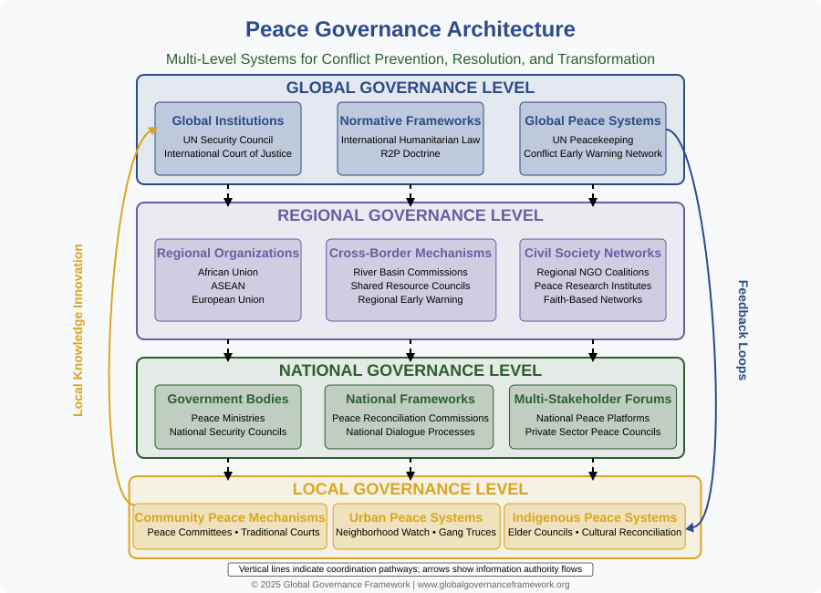
Peace Governance Architecture
Illustrates the multi-level architecture of peace governance from local to global scales, showing how governance structures at different levels interact through vertical coordination pathways and information flows.
{kind=link}
{kind=link}
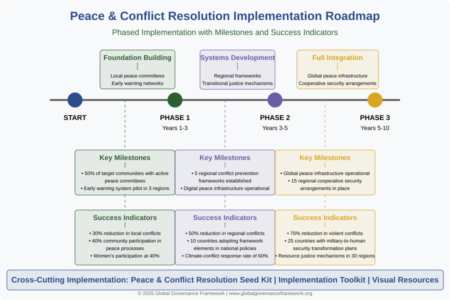
Implementation Timeline Roadmap
Outlines the phased implementation approach for peace governance over a 10-year horizon, detailing Foundation Building, Systems Development, and Full Integration phases with key milestones.
{kind=link}
{kind=link}
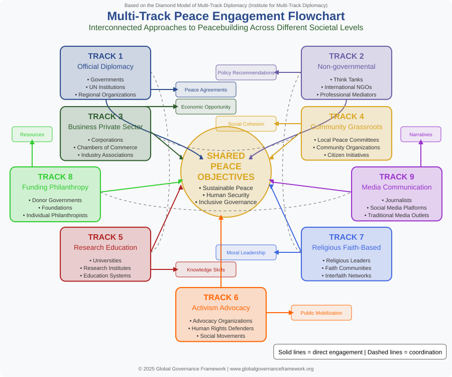
Multi-Track Peace Engagement Flowchart
Based on the Diamond Model of Multi-Track Diplomacy, this flowchart shows nine interconnected tracks of peacebuilding engagement from official diplomacy to grassroots initiatives.
{kind=link}
{kind=link}
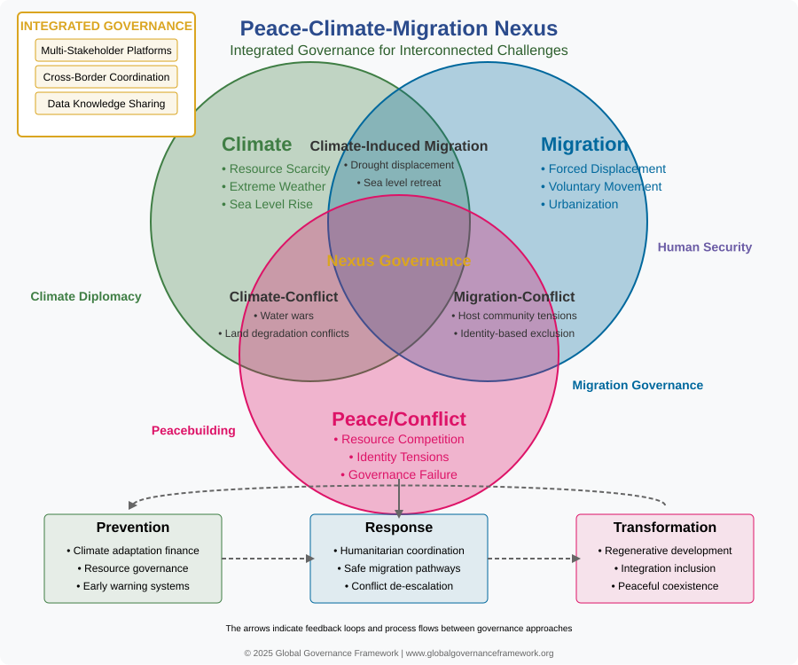
Peace-Climate-Migration Nexus
Illustrates the critical interconnections between climate change, migration patterns, and peace/conflict dynamics, with governance components for prevention, response, and transformation.
{kind=link}
{kind=link}
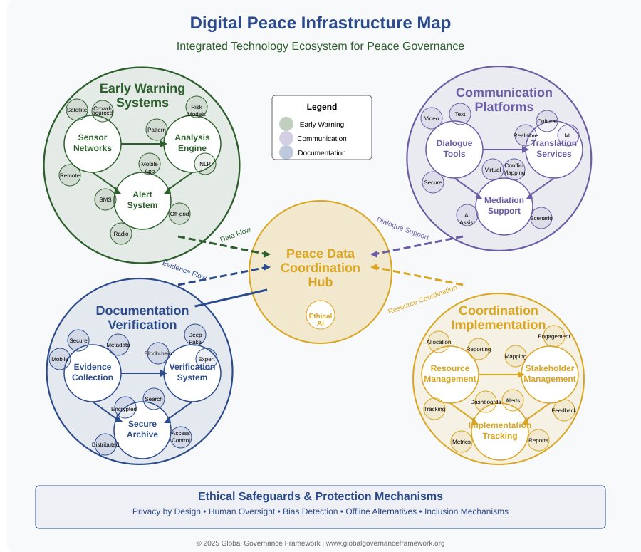
Digital Peace Infrastructure Map
Maps the technological ecosystem supporting peace governance, visualizing early warning systems, communication platforms, documentation tools, and coordination systems.
{kind=link}
{kind=link}
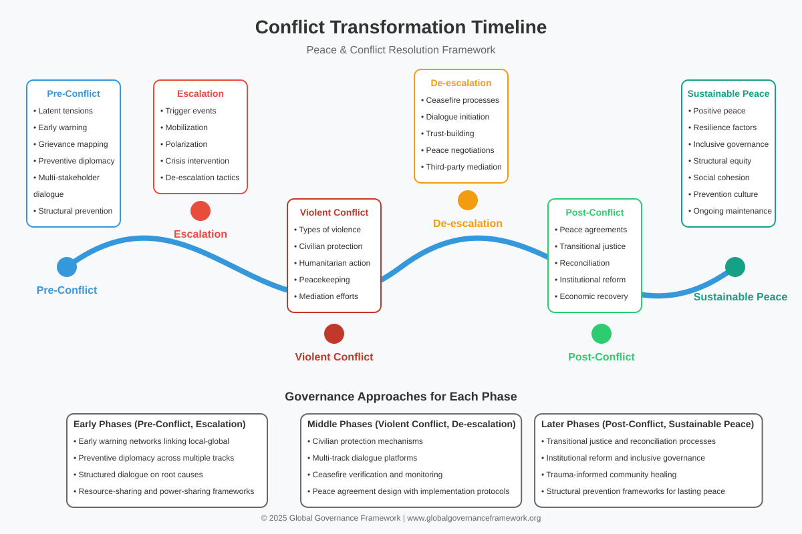
Conflict Transformation Timeline
Charts the typical progression of conflict dynamics and intervention points, from pre-conflict conditions through escalation, violent conflict, de-escalation, and post-conflict to sustainable peace.
{kind=link}
{kind=link}
Analytical Visualizations
These visualizations provide deeper analytical perspectives on conflict dynamics, developmental stages, and cross-system relationships.
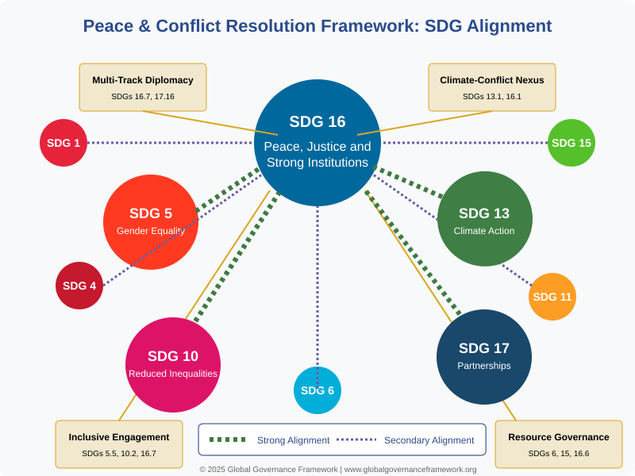
SDG Alignment Chart
Maps how the Peace & Conflict Resolution Framework aligns with and contributes to multiple Sustainable Development Goals, with SDG 16 as the central focus.
{kind=link}
{kind=link}
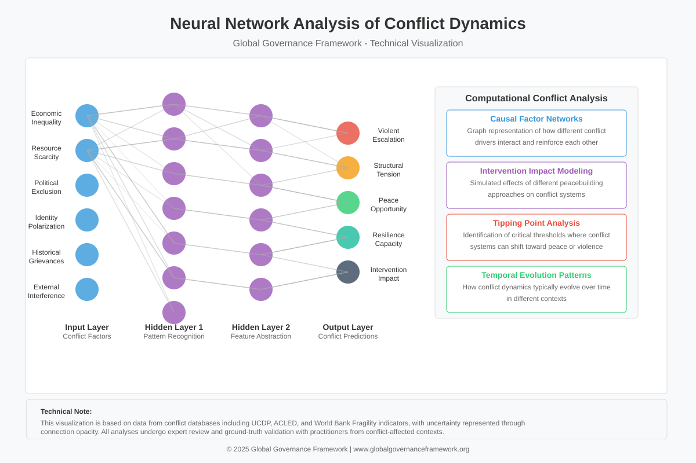
Neural Network Analysis of Conflict Dynamics
Illustrates how computational approaches can reveal complex patterns in conflict systems, showing input nodes representing factors, hidden layers for pattern recognition, and output nodes predicting outcomes.
{kind=link}
{kind=link}
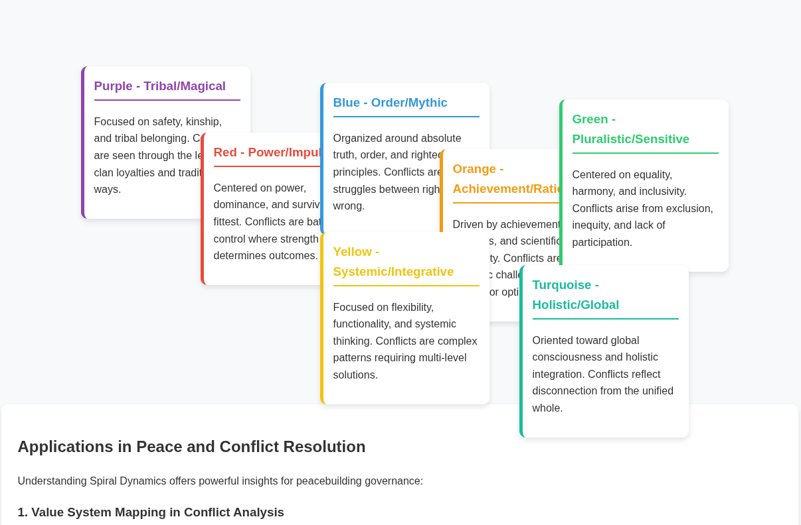
Spiral Dynamics in Conflict and Peace
Interactive visualization exploring how developmental value systems influence conflict and peacebuilding, mapping eight value systems and their impact on peace processes.
Technical Interactive Visualizations
Advanced interactive visualizations for technical applications and detailed analysis of peace and conflict systems.
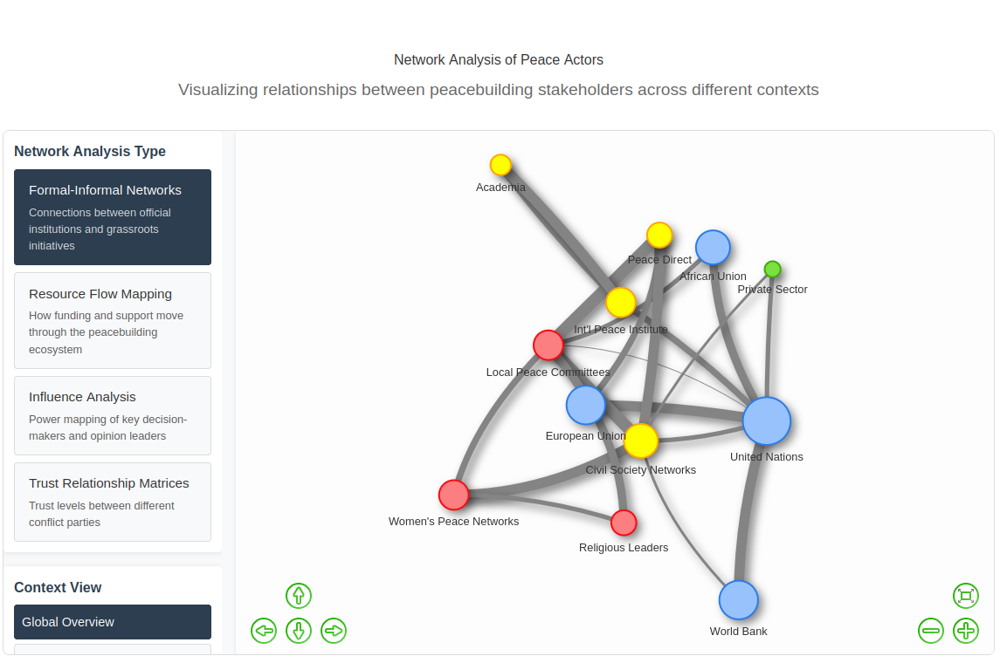
Network Analysis of Peace Actors
Allows exploration of complex relationships between different actors in peace processes, revealing connections between official institutions and grassroots initiatives.
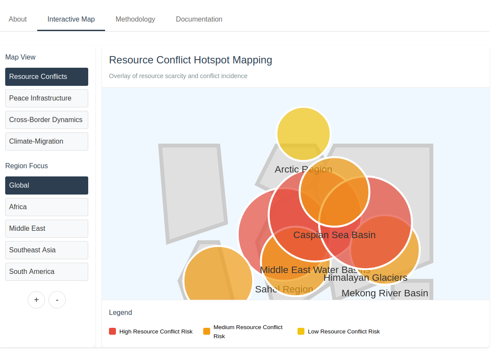
Geographic Information System (GIS) Applications
Provides spatial analysis of conflict dynamics and peace infrastructure, displaying resource conflict hotspots, cross-border dynamics, and climate-migration projections. [NOTE: Not finished!]
Request Visualizations or Provide Feedback
Need specialized visualizations for a specific context? Have suggestions for improvements? We welcome your input to make these resources more useful. Contact us